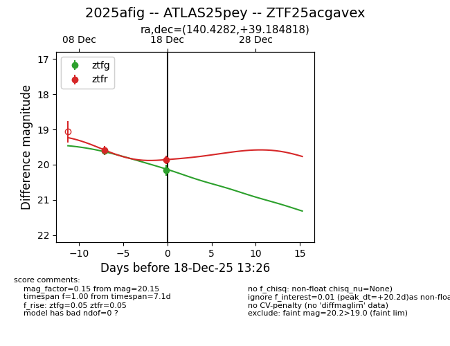
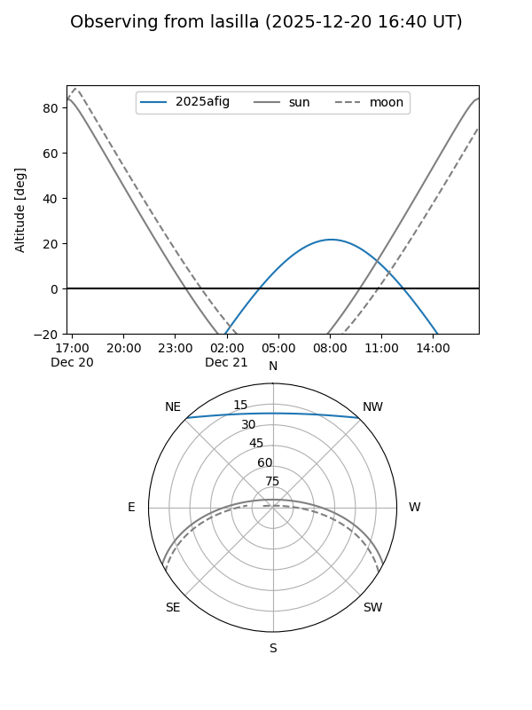
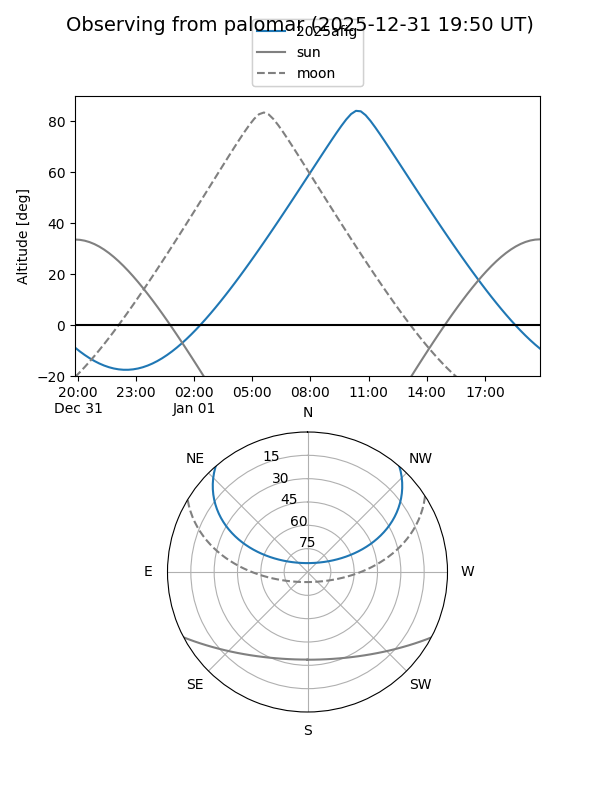
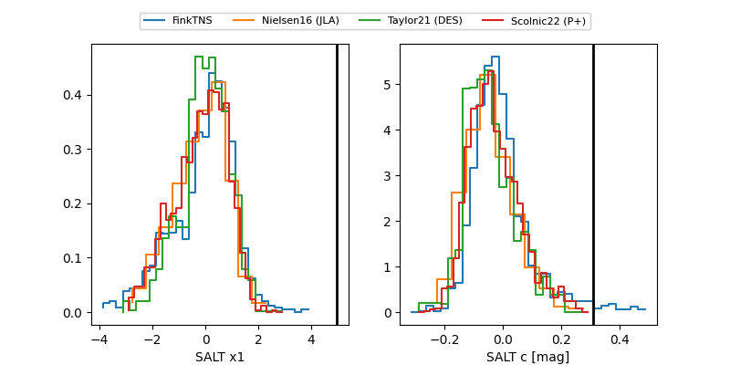

2025afig
Target 2025afig at 2025-12-31 18:00
Aliases and brokers:
FINK: link
Lasair: link
ALeRCE: link
TNS: link
YSE: link
alt names
ZTF25acgavex (ztf,fink_ztf)
2025afig (tns,yse)
ATLAS25pey (atlas)
Coordinates:
equatorial (ra, dec) = 140.4282,+39.18482
equatorial (HMS+DMS) = 09:21:42.77,+39:11:05.34
galactic (l, b) = (183.4867,+45.12971)
Flags:
Photometry:
last ztfg=20.30, ztfr=20.09
4 ztfg, 4 ztfr detections
Lightcurve

Visibility


Additional plots
